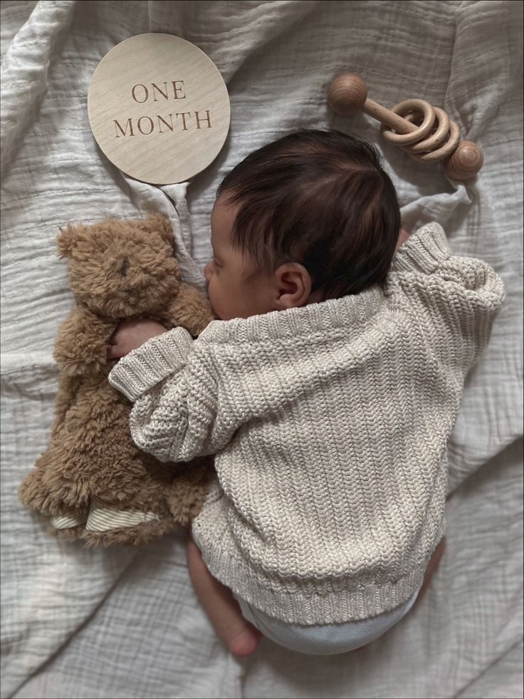
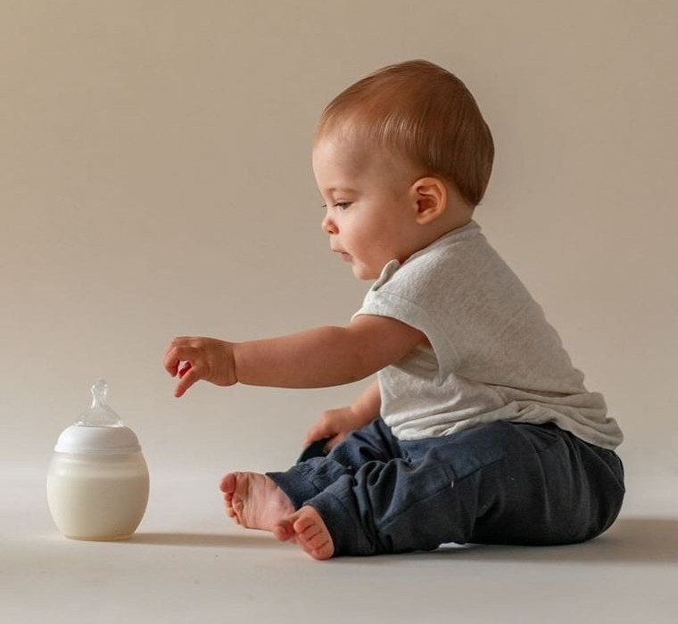

Wüssten Sie schon, dass Babys...?
300 Knochen haben
17 Stunden täglich schlafen
Stimmen erkennen können
Galerie

Typische Hungerzeichen von Neugeborenen
- Das Baby ist wach, blinzelt oder rollt mit den Augen.
- Es beginnt suchende Bewegungen mit Kopf und Mund zu machen.
- Er bewegt die Hand zum Mund. Dazu kommen oft sanfte Laute, Saufzen oder Schmatzen.
- Jetzt ist es unübersehbar: das Baby ist unruhig, strampelt und bewegt die Arme. Oft ist die Körperhaltung angespannt oder die Stirn gerunzelt.

Gesunder Babyschlaf
- Tipp 1: Kenne den Schlafbedarf deines Babys. Babys brauchen mehr Schlaf als Erwachsene und jedes Baby hat individuelle Bedürfnisse.
- Tipp 2: Rituale bauen Vertrauen auf. Sanfte Massage, Umziehen und Singen helfen, dein Kind auf Schlaf vorzubereiten.
- Tipp 3: Schaffe eine sichere Schlafumgebung. Eine feste Matratze und sichere Umgebung sind wichtig.
- Tipp 4: Finde die richtige Schlafsituation. Ob gemeinsames Bett oder separate Räume - wichtig ist, was für deine Familie passt.
- Tipp 5: Stresst euch nicht. Alle Babys können lernen zu schlafen, manche brauchen nur etwas mehr Unterstützung.
Gewichtszunahme pro Woche
Wie viele Windeln verbraucht ein Baby in der gesamten Wickelphase?
- 95 Prozent aller Kinder in Deutschland tragen in den ersten Jahren Einwegwindeln.
- Ein Neugeborenes braucht 6 bis 8 Windeln am Tag.
- In der gesamten Wickelphase kommt man auf rund 5.000 Windeln pro Kind.
- So werden täglich insgesamt 10 Millionen Einwegwindeln verbraucht.
- Das sind insgesamt 154.680 Tonnen Windeln pro Jahr, allein in Deutschland.
Schön, dass Sie bis hierhin gelesen haben.
Wir hoffen, dass Ihnen die Inhalte wertvolle Einblicke vermitteln konnten. Alle Informationen auf dieser Seite wurden sorgfältig recherchiert und zusammengestellt. Die zugrunde liegenden Quellen können Sie nachfolgend als PDF herunterladen.